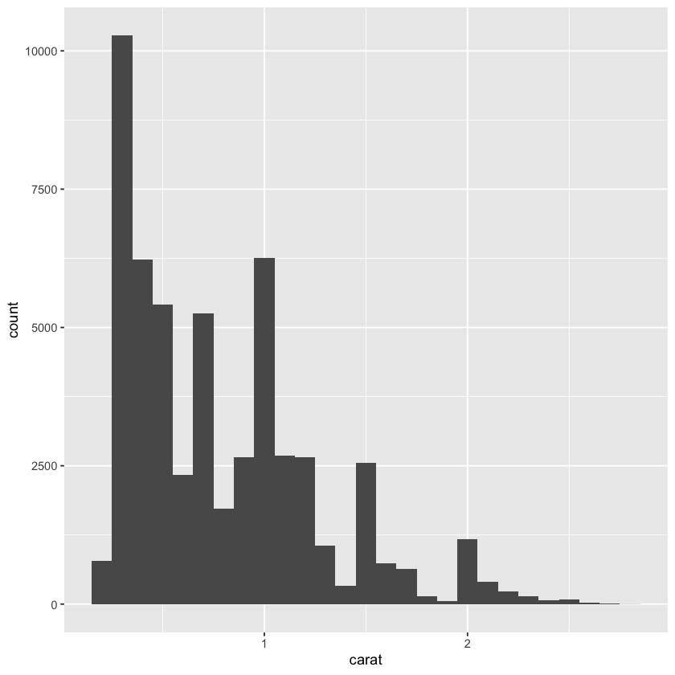
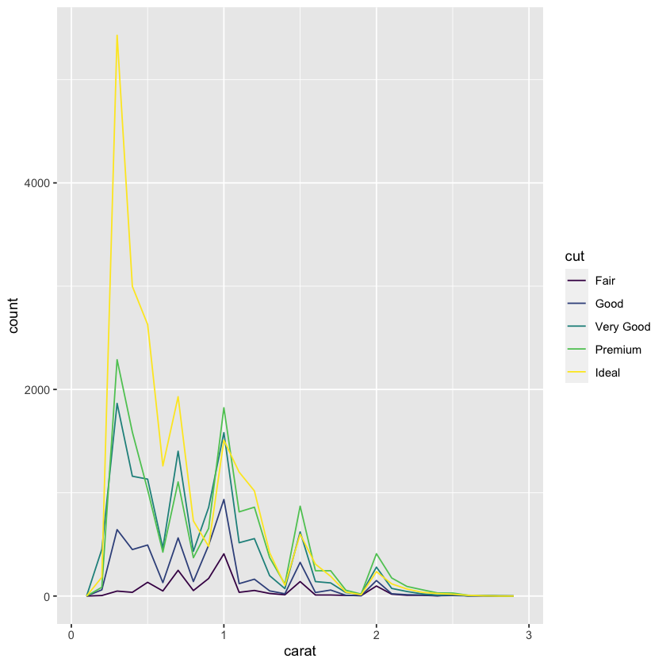

library('tidyverse')Data handling b
시각화, 결측값, 공변동, 패턴과 모델
- 모든 연속형 변수를 두 번 이상 측정하면 다른 값이 나온다. 이 때 변수의 측정값이 변하는 경향을
변동(variation)이라고 말한다.
범주형 변수 역시 서로 다른 피실험자 또는 다른 시간을 측정하는 경우 다를 수 있다.
결국 각각의 측정값은 서로 다른 약간의 오차를 포함하는데
이 때 모든 변수들은 고유한 변동 패턴을 가지고 있고 이러한 패턴을 이해하는 가장 좋은 방법은 변수들 값의 분포를 시각화 하는 것이다.
시각화
- 범주형 변수
ggplot(data = diamonds) +
geom_bar(mapping = aes(x = cut))
diamonds %>% count(cut)| cut | n |
|---|---|
| <ord> | <int> |
| Fair | 1610 |
| Good | 4906 |
| Very Good | 12082 |
| Premium | 13791 |
| Ideal | 21551 |
- 연속형 변수
ggplot(data = diamonds) +
geom_histogram(mapping = aes(x= carat), binwidth = 0.5)diamonds %>%
count(cut_width(carat, 0.5))| cut_width(carat, 0.5) | n |
|---|---|
| <fct> | <int> |
| [-0.25,0.25] | 785 |
| (0.25,0.75] | 29498 |
| (0.75,1.25] | 15977 |
| (1.25,1.75] | 5313 |
| (1.75,2.25] | 2002 |
| (2.25,2.75] | 322 |
| (2.75,3.25] | 32 |
| (3.25,3.75] | 5 |
| (3.75,4.25] | 4 |
| (4.25,4.75] | 1 |
| (4.75,5.25] | 1 |
smaller <- diamonds %>%
filter(carat < 3)
ggplot(data = smaller, mapping = aes(x = carat)) +
geom_histogram(binwidth = 0.1)
geom_freqpoly : 같은 플롯에서 여러개의 히스토그램을 겹처서 그리기
ggplot(data = smaller, mapping = aes(x = carat, color = cut)) +
geom_freqpoly(binwidth = 0.1)
ggplot(data = smaller, mapping = aes(x = carat)) +
geom_histogram(binwidth = 0.01)- 위의 그래프는 일부 캐럿의 다이아몬드가 많은 의문을 자아낸다.
일반적이라면 정규분포 혹은 고르게 분포할 것으로 예상해 볼 수 있겠다.
faithful %>% head #Yellowstone 분출간격 자료| eruptions | waiting | |
|---|---|---|
| <dbl> | <dbl> | |
| 1 | 3.600 | 79 |
| 2 | 1.800 | 54 |
| 3 | 3.333 | 74 |
| 4 | 2.283 | 62 |
| 5 | 4.533 | 85 |
| 6 | 2.883 | 55 |
ggplot(data = faithful, mapping = aes(x = eruptions)) +
geom_histogram(binwidth = 0.25)
ggplot(diamonds) +
geom_histogram(mapping = aes(x = y), binwidth = 0.5)- 이런 특정한 구간에 관측값이 쏠려 있는 경우 이상값을 알아내기 어려움.
그래서 보고 싶은 구간을 확대해서 본다.
coord_cartesian : x축 or y축의 지정한 특정 범위를 확대해서 보여줌.
ggplot(diamonds) +
geom_histogram(mapping = aes(x = y), binwidth = 0.5) +
coord_cartesian(ylim = c(0, 50))- 원본 y축이 0~ 12,000 범위였는데 0 ~ 50 구간으로 확대해서 본 모습
보이지 않던 이상치들이 보이기 시작함.
- 위의 그래프에서 보인 두개의 이상값 추출하기 위해 범위를 특정해서 필터링해보기
unusual <- diamonds %>%
filter(y < 3 | y > 20) %>%
select(price, x, y, z) %>%
arrange(y)unusual| price | x | y | z |
|---|---|---|---|
| <int> | <dbl> | <dbl> | <dbl> |
| 5139 | 0.00 | 0.0 | 0.00 |
| 6381 | 0.00 | 0.0 | 0.00 |
| 12800 | 0.00 | 0.0 | 0.00 |
| 15686 | 0.00 | 0.0 | 0.00 |
| 18034 | 0.00 | 0.0 | 0.00 |
| 2130 | 0.00 | 0.0 | 0.00 |
| 2130 | 0.00 | 0.0 | 0.00 |
| 2075 | 5.15 | 31.8 | 5.12 |
| 12210 | 8.09 | 58.9 | 8.06 |
결측값
- 이상값 처리법 두가지
1) 이상값이 포함된 행 전체를 지운다.
2) 이상값을 결측값으로 변경한다.
- 지우기(다른 측정값은 유용할 수도 있으므로 권장되지 않음)
diamonds2 <- diamonds %>%
filter(between(y, 3, 20))diamonds2 %>% head| carat | cut | color | clarity | depth | table | price | x | y | z |
|---|---|---|---|---|---|---|---|---|---|
| <dbl> | <ord> | <ord> | <ord> | <dbl> | <dbl> | <int> | <dbl> | <dbl> | <dbl> |
| 0.23 | Ideal | E | SI2 | 61.5 | 55 | 326 | 3.95 | 3.98 | 2.43 |
| 0.21 | Premium | E | SI1 | 59.8 | 61 | 326 | 3.89 | 3.84 | 2.31 |
| 0.23 | Good | E | VS1 | 56.9 | 65 | 327 | 4.05 | 4.07 | 2.31 |
| 0.29 | Premium | I | VS2 | 62.4 | 58 | 334 | 4.20 | 4.23 | 2.63 |
| 0.31 | Good | J | SI2 | 63.3 | 58 | 335 | 4.34 | 4.35 | 2.75 |
| 0.24 | Very Good | J | VVS2 | 62.8 | 57 | 336 | 3.94 | 3.96 | 2.48 |
- 이상값 -> 결측값
diamonds2 <- diamonds %>%
mutate(y = ifelse(y < 3 | y > 20, NA, y))
diamonds2 %>% head| carat | cut | color | clarity | depth | table | price | x | y | z |
|---|---|---|---|---|---|---|---|---|---|
| <dbl> | <ord> | <ord> | <ord> | <dbl> | <dbl> | <int> | <dbl> | <dbl> | <dbl> |
| 0.23 | Ideal | E | SI2 | 61.5 | 55 | 326 | 3.95 | 3.98 | 2.43 |
| 0.21 | Premium | E | SI1 | 59.8 | 61 | 326 | 3.89 | 3.84 | 2.31 |
| 0.23 | Good | E | VS1 | 56.9 | 65 | 327 | 4.05 | 4.07 | 2.31 |
| 0.29 | Premium | I | VS2 | 62.4 | 58 | 334 | 4.20 | 4.23 | 2.63 |
| 0.31 | Good | J | SI2 | 63.3 | 58 | 335 | 4.34 | 4.35 | 2.75 |
| 0.24 | Very Good | J | VVS2 | 62.8 | 57 | 336 | 3.94 | 3.96 | 2.48 |
ggplot(data = diamonds2, mapping = aes(x = x, y = y)) +
geom_point()Warning message:
“Removed 9 rows containing missing values (geom_point).”library('nycflights13') #13년도 뉴욕항공편 데이터여기서
nycflights13::flights$dep_time값이 NA인 값은 해당 항공편 운항이 취소된 것을 의미
- 취소된 비행기의 예정 출발 시각과 취소되지 않은 비행기의 출발 시각 비교해보기
nycflights13::flights %>%
mutate(
cancelled = is.na(dep_time),
sched_hour = sched_dep_time %/% 100,
sched_min = sched_dep_time %% 100,
sched_dep_time = sched_hour + sched_min / 60
) %>%
ggplot(mapping = aes(sched_dep_time)) +
geom_freqpoly(
mapping = aes(color = cancelled),
binwidth = 1/4
)- 그래프는 제대로 그려졌으나 취소된 항공편이 취소되지 않은 항공편에 비해 현저히 적기 때문에 이 플랏은 유용하지 않음.
TRUE가 FALSE와 비슷한 수준(count)이라면 유의미한 비교가 가능할듯.(시계열 자료 느낌)
공변동
변동이 변수 내의 움직임을 설명한다면 공변동(covariation)은 변수들 간의 움직임을 설명한다.
즉, 공변동은 둘 이상의 변숫값이 연관되어 동시에 변하는 경향
- 공변동을 시각화 방법은 변수의 유형에 따라 달라진다.
- 기존의 방식의 문제는 빈도수가 차이날 때 변수들의 움직임이 잘 보이지 않는다는 것이다.
ggplot(data = diamonds, mapping = aes(x = price)) +
geom_freqpoly(mapping = aes(color = cut), binwidth = 500)ggplot(diamonds) +
geom_bar(mapping = aes(x = cut))
방법1) density
..density.. : 전체적인 빈도수가 다르기에 큰 그래프에 작은 그래프들이 묻혀 모든 그래프들의 추이를 비교하기에는 어려움.(특히 빈도가 작아서 잘 안보이는 것들)
density를 사용하면 그래프 아래 넓이를 1로 고정시켜주기에 각각의 추이 자체만을 비교할 때 도움이 된다.
이런식으로 안쓰고 geom_density() 형태로도 사용가능
ggplot(
data = diamonds,
mapping = aes(x = price, y = ..density..)
) +
geom_freqpoly(mapping = aes(color = cut), binwidth = 500)- 범주형 변수로 구분된 연속형 변수의 분포를 나타내는 또 다른 방법은
boxplot
방법2) boxplot
ggplot(data = diamonds, mapping = aes(x = cut, y= price)) +
geom_boxplot()
- 박스 플롯은 분포에 대해 더 적은 정보를 확인할 수 있지만, 간단하므로 쉽게 비교할 수 있다.
위의 플롯에서 얻을 수 있는 정보는 ’더 좋은 품질의 다이아몬드가 평균적으로는 더 저렴하다’는 직관에 반하는 사실이다.
순서가 없는 변수의 공변동
- cut의 경우 fair ~ ideal까지 순서에 따라 나열된 것을 비교해 분석해 보았다.
하지만, 대부분의 범주형 변수에는 이러한 고유한 순서가 없기에 순서를 변경하여 더 유용한 정보를 제공하도록 표현할 수 있다.
이 때,reorder사용
reorder : 순서 재 정렬
- mpg데이터 셋의 class 변수의 hwy를 순서 없이 그냥 나열한 plot
ggplot(data = mpg, mapping = aes(x = class, y= hwy)) +
geom_boxplot()
- 추세를 더 쉽게 파악하기 위해 hwy 변수의 중간값을 기준으로 class변수의 순서를 변경
ggplot(data = mpg) +
geom_boxplot(
mapping = aes(
x = reorder(class, hwy, FUN = median),
y = hwy
)
)- 변수의 이름이 길다면 coord_flip으로 축 변경
ggplot(data = mpg) +
geom_boxplot(
mapping = aes(
x = reorder(class, hwy, FUN = median),
y = hwy
)
) +
coord_flip()1) 두 개의 범주형 변수 사이의 공변동 시각화하기
geom_count : 각 조합에 대한 관측값 수 count
ggplot(data = diamonds) +
geom_count(mapping = aes(x = cut, y= color))count : n()과 역할 같음, 다만 더 간단하다
diamonds %>%
count(color, cut) %>% head| color | cut | n |
|---|---|---|
| <ord> | <ord> | <int> |
| D | Fair | 163 |
| D | Good | 662 |
| D | Very Good | 1513 |
| D | Premium | 1603 |
| D | Ideal | 2834 |
| E | Fair | 224 |
- geom_tile()함수와 fill심미성으로 시각화
심미성 : 점의 크기, 모양, 색깔 같이 객체를 다르게 표현하는 속성
diamonds %>%
count(color, cut) %>%
ggplot(mapping = aes(x = color, y = cut)) +
geom_tile(mapping = aes(fill = n))2) 두 개의 연속형 변수 사이의 공변동 시각화하기
- geom_point사용
ggplot(data = diamonds) +
geom_point(mapping = aes(x = carat, y = price))- 겹칠 때 잘 안보이므로 alpha사용
ggplot(data = diamonds) +
geom_point(
mapping = aes(x = carat, y= price),
alpha = 0.01
)- 매우 큰 데이터셋에서는 투명도의 효과가 미비할 수도 있다.
이 때는bin을 사용한다. 이전에 사용한geom_histogram,geom_freqpoly은 1차원의 빈이다.
geom_bin2d,geom_hex는 2차원의 빈
이들은 좌표 평면을 2D 빈으로 나눈 후, 각 빈에 몇 개의 점이 해당하는지 나타내기 위해 색상 채우기를 사용
이 때,geom_bin2d는 직사각형 빈을 만들고,geom_hex는 육각형 빈을 만든다.
library('hexbin')ERROR: Error in library("hexbin"): ‘hexbin’이라고 불리는 패키지가 없습니다ggplot(data = smaller) +
geom_bin2d(mapping = aes(x = carat, y = price))ggplot(data = smaller) +
geom_hex(mapping = aes(x = carat, y = price))- (앞에 나옴) 연속 변수를 그룹화하여 범주형 변수처럼 만들기
ggplot(data = smaller, mapping = aes(x = carat, y= price)) +
geom_boxplot(mapping = aes(group = cut_width(carat, 0.1)))- 이것의 문제는 관측값의 개수는 무시하고 보여주기에 빈도에 대한 정보는 없음
다음은 관측값 수까지 반영한 방법이다.
varwidth = TRUE: 이제 박스 플롯의 너비는 점의 개수와 비례한다
유사한 방법으로cut_number: 각 빈에 대략 같은 수의 점을 표시
- cut_number이용
ggplot(data = smaller, mapping = aes(x = carat, y = price)) +
geom_boxplot(mapping = aes(group = cut_number(carat, 20)))패턴과 모델(★)-심화
- 데이터의 패턴은 상관관계에 대한 단서를 제공한다. 두 변수 사이에 규칙적인 관계가 존재하면 데이터의 패턴으로 나타난다. 패턴을 발견하게 되면 스스로에게 질문해본다.
> 이 패턴은 우연의 일치(즉, 랜덤한 가능성) 때문인가?
패턴이 내포하는 상관관계를 어떻게 설명할 수 있는가?
패턴이 내포하는 상관관계는 얼마나 강한가?
다른 변수가 그 상관관계에 영향을 줄 수 있는가?
데이터의 개별 하위집단을 살펴보면 상관관계가 변경되는가?
- Old Faithful 분출 시간과 분출 사이의 시간 사이의 산점도는 분출 사이의 대기 시간이 길수록 분출 시간도 길어지는 패턴을 보인다.
ggplot(data = faithful) +
geom_point(mapping = aes(x = eruptions, y = waiting))변동이 불확실성이 만드는 현상으로 생각한다면 공변동은 불확실성을 감소시키는 현상이다.
두 개의 변수가 함께 변동하면 한 변수의 값을 사용하여 다른 변수의 값을 잘 예측할 수 있다.
인과관계(특별한 경우)로 인해 공변동이 생기는 경우, 한 변수의 값을 다른 변수의 값을 통제하는 데 사용할 수 있다.
모델은 데이터에서 패턴을 추출하는 도구이다.
다이아몬드 데이터에서 컷팅과 캐럿, 캐럿과 가격은 밀접하게 관려노디어 있으므로 컷팅과 가격의 상관관계를 이해하기 어렵다.
모델을 활용하여 가격과 캐럿 간의 매우 강력한 상관관계를 제거하면 남아있는 중요한 세부요소들을 탐색할 수 있다.
- 다음은 carat으로 price를 예측하는 모델을 적합시킨 다음, 잔차(예측값과 실제값의 차이)를 계산한다.
캐럿의 효과가 제거되면 잔차는 다이아몬드의 가격에 대한 관점을 제공하기에
library('modelr')mod <- lm(log(price) ~ log(carat), data = diamonds)
diamonds2 <- diamonds %>%
add_residuals(mod) %>%
mutate(resid = exp(resid))
ggplot(data = diamonds2) +
geom_point(mapping = aes(x = carat, y = resid))ggplot(data = diamonds2) +
geom_boxplot(mapping = aes(x = cut, y = resid))